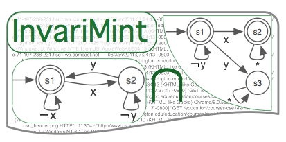

|
Caroline LemieuxUndergraduateUniversity of British Columbia Departments of Computer Science, Mathematics |
About
|
I am a 4th year undergraduate student pursuing a BSc in Combined Honours Computer Science and Mathematics at the University of British Columbia. My current research focuses on formal methods and analysis of program behaviour. I have done most of my research with Ivan Bestchastnikh. My research interests remain broadly in the formal intersection of Computer Science and Mathematics. Additionally, I have always been passionate about helping my fellow students learn, and have been an undergraduate teaching assistant at UBC. |
Projects

|
I am a main developer of the Texada tool, which mines linear temporal logic (LTL) relationships of arbitrary length and complexity. Texada takes as input a log of traces and a property type expressed in LTL and outputs instantiations of this property types with log events which hold on the entire log. Texada also supports confidence and support thresholds to allow for mining on imperfect or incomplete logs. You can now try Texada. |

|
I am now building the Quarry tool. Quarry interfaces data invariants with temporal invariants in order to extract data-temporal invariants of arbitrary length and complexity. Quarry mines relationships between Daikon-style data invariants specified in linear temporal logic (LTL). Quarry uses Daikon for data invariant inference and Texada for inference of temporal invariants. |
|  | I have done some enhancement work on Invarimint, enhancing the tool to allow users to specify individual property types to be mined instead of only having the Synoptic and kTails algorithms to choose from. |

|
I have worked on one of UBC's first computer science MOOCs, Introduction to Systematic Program Design, while the course was still hosted on Coursera. I worked on both MOOC offerings, focusing mostly on video lecture development, but also participating in TA tasks like replying to students on forums and composing peer-graded projects. The video lectures from the Coursera offering were used in CPSC 110, UBC's introductory computer science course, and are available for viewing here. |
Papers and Publications
|
CV
|
Full CV here.
Education
Awards and Scholarships
Work Experience
Computer Skills
Languages
|
Funding
| I am thankful to have received funding from NSERC and UBC to support my research. |